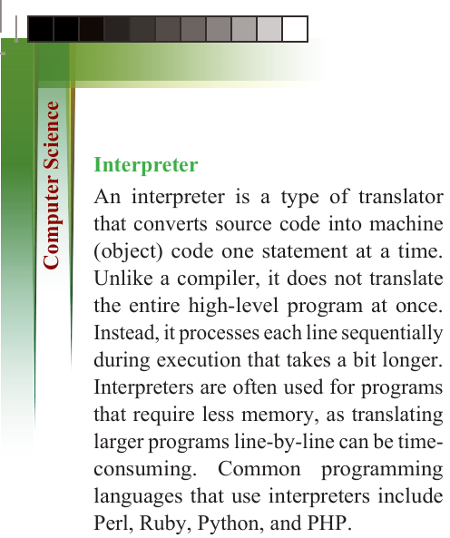
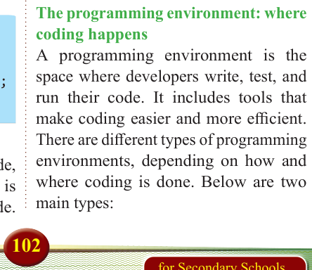
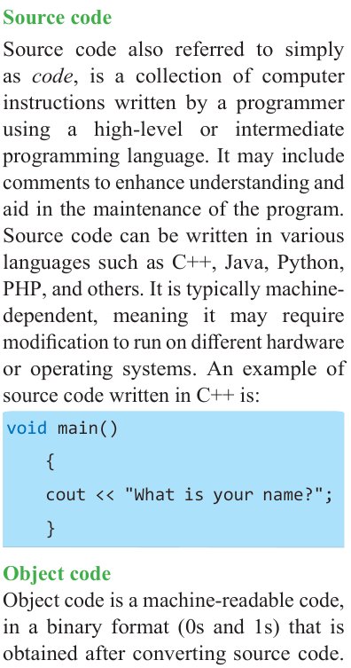
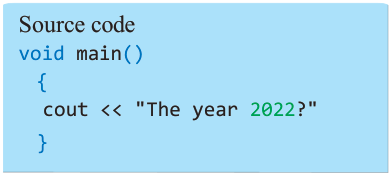
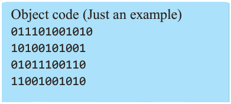

102
for Secondary Schools
Interpreter
An interpreter is a type of translator
that converts source code into machine
(object) code one statement at a time.
Unlike a compiler, it does not translate
the entire high-level program at once.
Instead, it processes each line sequentially
during execution that takes a bit longer.
Interpreters are often used for programs that require less memory, as translating
larger programs line-by-line can be time-
consuming. Common programming
languages that use interpreters include
Perl, Ruby, Python, and PHP.
Source code
Source code also referred to simply as code, is a collection of computer instructions written by a programmer using a high-level or intermediate
programming language. It may include
comments to enhance understanding and

aid in the maintenance of the program.

Source code can be written in various

languages such as C++, Java, Python,


PHP, and others. It is typically machine-

dependent, meaning it may require

modification to run on different hardware


or operating systems. An example of

source code written in C++ is:



void main()


{

cout << "What is your name?";

}

Object code

Object code is a machine-readable code,

in a binary format (0s and 1s) that is

obtained after converting source code.


The object code is also known as machine


code because it can only be read and

understood by the processor.

Source code
void main()
{ cout << "The year 2022?"
}

Object code (Just an example)
011101001010
10100101001
01011100110
11001001010
Translators
Translators are programming language
processors used to convert programs into machine-readable language. They
are classified into three main categories: assemblers, compilers, and interpreters.
Assemblers
Assemblers are language processors used
to convert programs written in assembly
language into machine code that a
computer can execute directly.
The programming environment: where
coding happens
A programming environment is the
space where developers write, test, and
run their code. It includes tools that
make coding easier and more efficient.
There are different types of programming
environments, depending on how and where coding is done. Below are two
main types:


ComputerScin